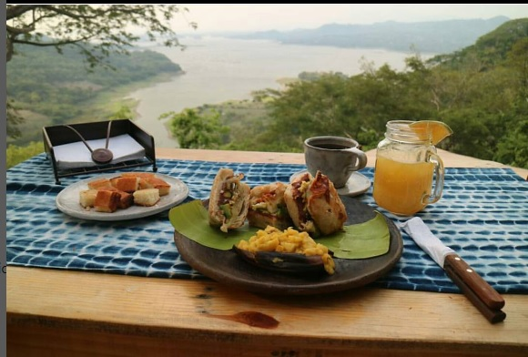
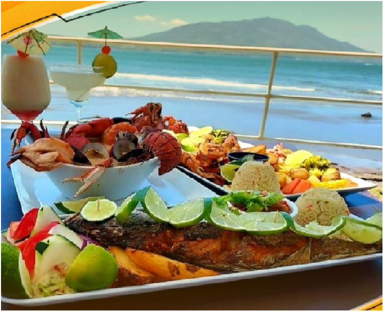
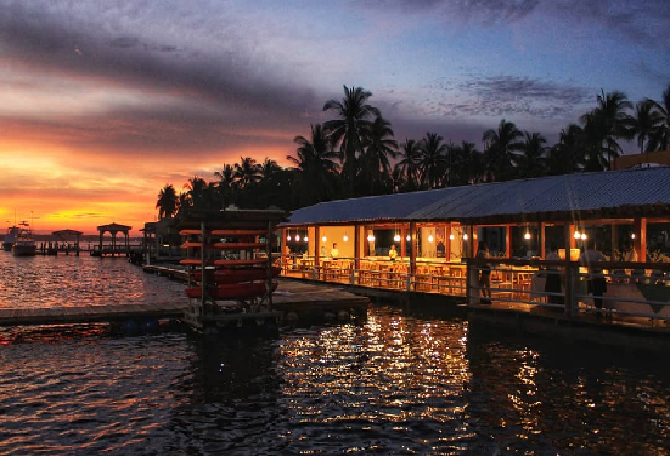

Flavors in the east
Casa 1800 (Suchitoto)
Casa 1800 Suchitoto is a charming restaurant surrounded by nature in the town of Suchitoto with an incredible view of Lake Suchitlan with a vintage decoration that allows you to feel in a magical corner. It has delicious dishes but the specialty is pizza with typical Salvadoran flavors and ingredients such as loroco and chorizo and drinks such as horchata and tropical fruit soft drinks. The place besides being a restaurant is also a hostel where you will find a warm and comfortable place to enjoy a special night. Prices per person are breakfast between $6-$8 and lunch between $15-$20
Maribel Restaurant (La Union)
Another incredible thing for which Salvador is very well known are its beaches and the best are in the East of the country. Maribel Restaurant is one of the restaurants with a paradisiacal view of the Gulf of Fonseca, making this place the right environment for enjoy the delicious Salvadoran seafood. With buffet options and also dishes such as seafood platters, seafood cocktails, lobster and many more dishes, this restaurant is the perfect place to combine excellent food and an incredible view. The day pass that includes lunch costs $20.
Hotel & Restaurant Bahia del Sol (La Paz)
A tropical paradise, this is a perfect place with two environments: the beach and the estuary with one of the best locations, one of the best beaches in the country. It has the all-inclusive option for the $25 pass for breakfast and lunch. This It is a hotel known for its fishing competitions in which they are held during various periods of the year since the country allows you to enjoy a pleasant climate conducive to fishing.
